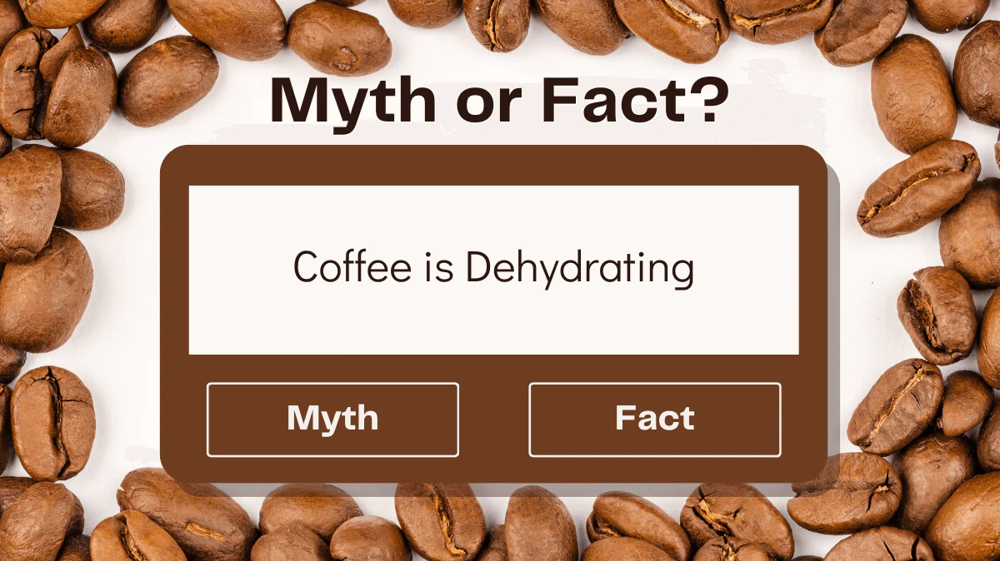

From Bean to Cup: The Journey of Coffee Around the WorldBy David Carter |
Espresso vs. Americano: Understanding Coffee VarietiesBy Sophia Martinez |
The Hidden Health Benefits of Your Daily Coffee FixBy Sophia Martinez |
The Science Behind Caffeine: How Coffee Boosts Your BrainpowerBy Natalie Reynolds |

Coffee Myths Debunked: Separating Fact from FictionBy Ethan Williams |
A Beginner’s Guide to Home Coffee RoastingBy Noah Phillips |
Coffee Trends 2025: What’s Brewing in the Coffee World?By Benjamin Harris |
How to Make Coffee Without a Coffee Maker: 5 Easy Methods"By Victoria Reed |